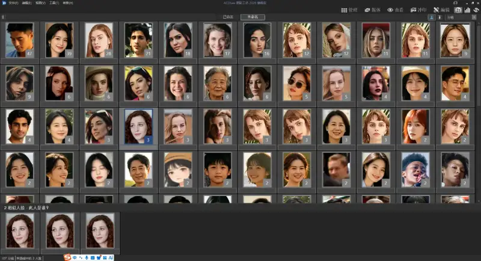
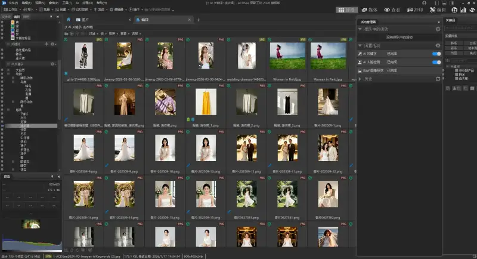
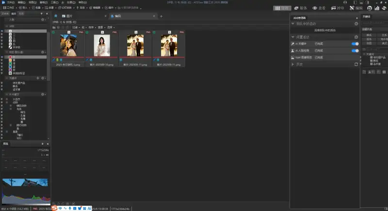
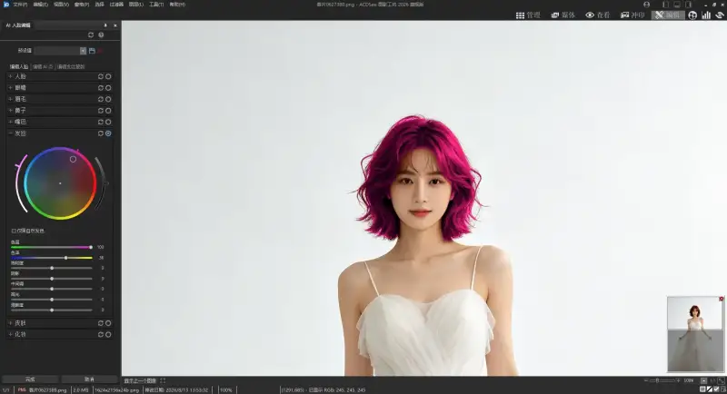
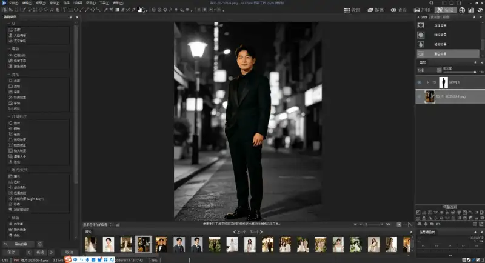

Have you ever had this happen? You look for photos from a trip years ago. You open the folder and see a dense wall of thumbnails. Images from your phone, your camera, and screenshots are all mixed together. You search for half an hour and still cannot find the one you want. Or you want to color-grade and resize a set of photos together. You must import them one by one into editing software. It takes time and effort.
If your computer also holds a huge library of images, and you want to organize them efficiently while doing basic edits on the side, then the ACDSee 2026 Ultimate edition may solve these headaches.
1. Auto-archive tens of thousands of images, and stop fishing in the sea for photos
The pain point for many people is that manual sorting takes too much time, but without sorting they cannot find anything. ACDSee built its core strength into smart management.
Most useful isAI face recognition. After you import a whole photo folder, the software finds every face in it. You just name each person. Next time you want photos of someone, search the name and pull up all related images at once. Photos of family, friends, and colleagues sort themselves, so you no longer dig through folder after folder.

Beyond people,AI auto keyword tagging is also useful. The software reads image content locally and adds tags such as beach, food, buildings, and pets. To find photos of a cat, search cat. To find landscapes, search mountain or sea. Even if you never tagged an image, you still find it precisely.

Daily organizing has many thoughtful touches. Star-rate your best photos. Use color labels to sort photos to edit, edited, and ready to share. Batch rename, batch convert format, and batch resize all take one click. Especially, all AI features run locally. Nothing uploads to the cloud. It protects privacy, is not limited by internet speed, and works offline.

2. Daily editing without opening PS, great results in a few steps
Many people finish organizing and still import images into another editor. Switching back and forth is a hassle. But in ACDSee , managing and editing are linked. After you view an image, you can adjust it right away.
Basic adjustments of light, contrast, and saturation go without saying. Drag a slider and preview the effect live. The new 2026 AI features are especially friendly for everyday users:
AI noise reduction: for night shots and high-ISO originals, remove color noise in one click while keeping detail. No slow tuning of settings.
AI hair mask: to change a portrait background or recolor the hair, you used to cut out the subject for a long time. Now AI selects the hair edges precisely, so beginners get fine results too.
AI develop presets: to unify the style of dozens of photos, apply a smart preset and batch-grade them in one step.

If you love photography, it also reads RAW files from major cameras directly. From the management view you enter RAW adjustment mode. You fine-tune white balance, lighting balance, and tone, without extra professional develop software. For everyday needs such as posting to social feeds and keeping records, you rarely open a large editor. You handle it all in ACDSee in one place.
3. One app covers the full flow of [browse - organize - edit - export]
After using it, the clearest feeling is ease. You no longer jump between file explorer, image viewer, and editor. From importing photos, filtering rejects, and sorting them, to color grading, editing, and batch export, the whole flow happens in one app. When you work on a large number of images, a background task manager quietly runs batch jobs. You keep browsing and editing other images at the same time, and nothing stalls.
For everyday users, it does not have the steep learning curve of pro software. The common features are out in the open, so you start right away. For users who want more, pro tools such as layers, masks, and filters are all there, enough for most creative tasks.

If a messy image library on your computer troubles you, try this app from the ACDSee website. Buy now and use the exclusive code 20260819CVDE to take 50 yuan off the current sale price, for an extra discount on top of a discount.
Organizing your digital files is also organizing the memories of your life. Let each photo sit where it belongs. Next time you want to recall something, one search finds it.